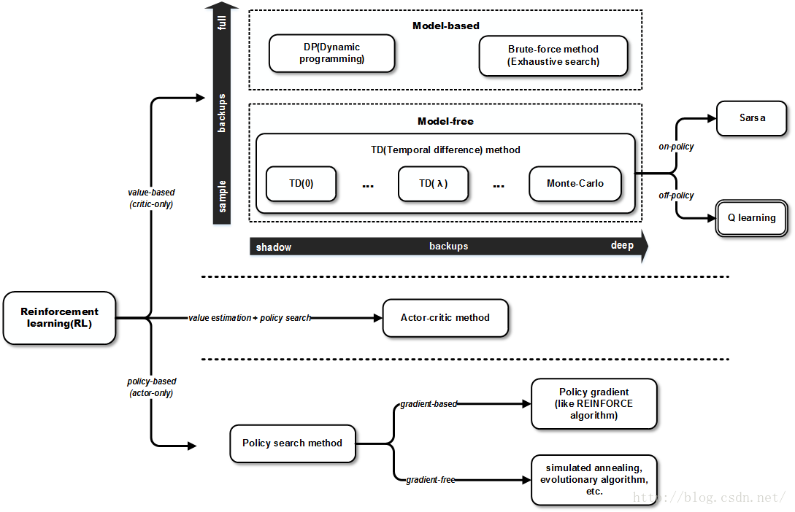
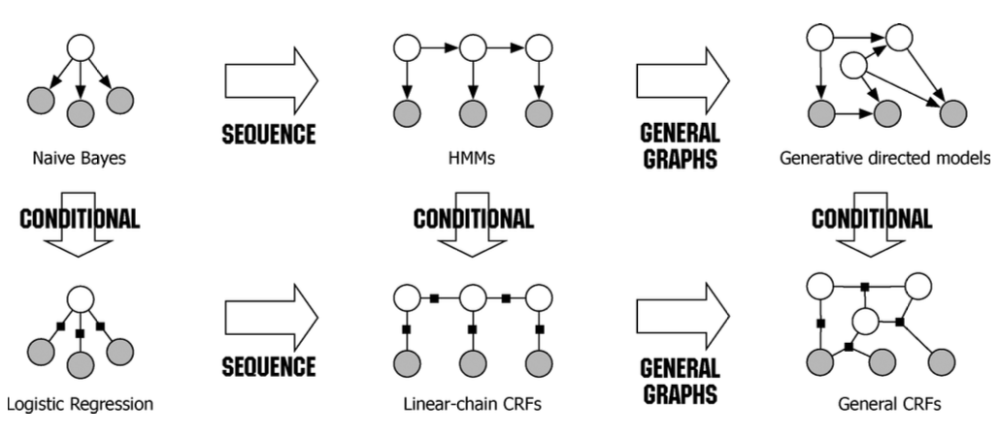

Collections of Readings
Updated:
- 1. ROUGE and BLEU
- 2. Matplotlib
- 3. Collision Detection Using the Separating Axis Theorem
- 4. Reinforcement Learning
- 5. Contextual Bandits
- 6. Stochastic and Deterministic Processes
- 7. Vim tricks
- 8. RNN tricks
- 9. Gradient Descents
- 10. Conditional Random Fields
- 11. MCMC Sampling
- 12. Coreference Resolution
- 13. Attention and Memory in NLP
- 14. Deep Learning Formula of NLP
- 15. Epochs in NN
- 16. Conditional Random Fields
ROUGE and BLEU
In general, Recall-Oriented Understudy for Gisting Evaluation(ROUGE) measures recall and Bilingual Evaluation Understudy(BLEU) measures precision. What is ROUGE and how it works for evaluation of summaries and BLEU in Wiki.
Matplotlib
The Matplotlib overview, basic intro, axes, colormaps_reference, interpolations for imshow/matshow, resize image size by pixel .
Collision Detection Using the Separating Axis Theorem
Reinforcement Learning

Value-based
A blog introduces the concept of Q-learning.
Policy-based
A buddle of blogs 1 2 introduce the Policy Optimization.
Advantages (by David Silver)
- Better convergence properties.
- Effective in high-dimensional or continuous action spaces.
- Can learn stochastic policies.
Disadvantages (by David Silver)
- Typically converge to a local rather than global potimum.
- Evaluation a policy is typically inefficient and high variance.
Actor-Critic
Contextual Bandits
A great blog giving an introduction to contextual bandits.
Stochastic and Deterministic Processes
This page says a deterministic machine is a machine which for a particular state $s$ and an action $\alpha$ that is enabled in state $s$, has only one possible successor state $s’$. A non-deterministic machine is a machine which for a particular state $s$ and an action $\alpha$ that is enabled in state $s$, has a set of possible successor states $s’, s’’, …$. A stochastic machine is a machine which has a probability to be in state $s$, i.e. $P(X = s)$. Assume that the state space of the machine has $n$ states: $s_0, …, s_{n-1}$. The sum of probabilities to be in those states is 1, i.e. $\Sigma_{i=0}^{n-1} P(X = s_i)$. An action causing the transition in a stochastic machine from one state to another occurs with a transition probability. Let us say the transition probability to move from state $s$ to $s’$ is $p$. The probability to be in $s’$ is then $P(X = s) \cdot p$.
Vim tricks
Why, oh WHY, do those #?@! nutheads use vi?
RNN tricks
A blog illustrated orthogonal initialization for recurrent neural networks.
Gradient Descents
An excellent blog by Sebastian Ruder gave an overview of gradient descent optimization algorithms.
Conditional Random Fields
An Introduction to Conditional Random Fields By Charles Sutton and Andrew McCallum Page 272 - 286 gave a clear explanation about the relationship between Naive Bayes, Hidden Markov Models, Logistic Regression and linear-chain Conditional Random Fields.

MCMC Sampling
MCMC sampling for dummies (2015) explained the intuition behind MCMC ( Markov chain Monte Carlo) Sampling.
Coreference Resolution
State-of-the-art neural coreference resolution for chatbots (2017) was an excellent blog to present their work on NLP coreference task.
Attention and Memory in NLP
Interesting ideas in Attention and Memory in Deep Learning and NLP (2016): 1) Current attention mechanisms in NLP (firstly proposed in 2014) are more like memory networks (proposed in 2015). 2) Even LSTM can not handle long sequence well. The author thinks that the “real” attention mechanism is more like the one in Reinforcement Learning Neural Turing Machines.
Deep Learning Formula of NLP
As the title Embed, encode, attend, predict: The new deep learning formula for state-of-the-art NLP models (2016) suggested, currently, the powerful approach to solve NLP problems can be summarized as a simple four step formula: embed, encode, attend, predict.
Epochs in NN
Why do neural network researchers care about epochs provided empirical and theoretical explanations why we should reshuffle the dataset before each epoch.
- Shuffle is more chaotic, but converges much faster than Random and Cycle.
- Picking a batch randomly during training leads to uneven visits to data.
Conditional Random Fields
Introduction to Conditional Random Fields gives an intuitive introduction to CRF.